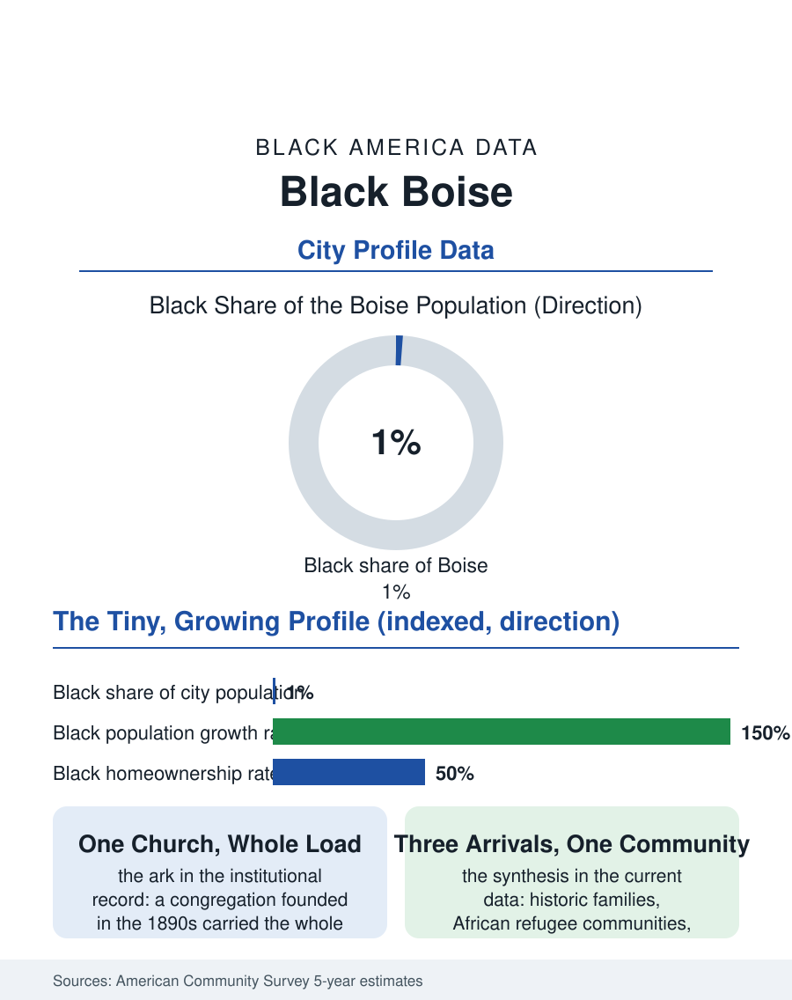

Black Cities
The Ark: Black Boise
One percent of Boise and growing: an 1890s congregation, refugee arrivals, and tech professionals converging in Idaho's capital. The Boise file.

Boise's Black community is the smallest in this atlas by share, on the order of three thousand people in a city of about two hundred thirty-five thousand, barely over one percent, in the capital of one of America's fastest-growing states. Idaho's Black history is a study in persistence at the margin: a population that has never exceeded a few thousand statewide, maintaining churches, businesses, and civic institutions across a century and a half since the mining camps. The census counts a community now growing faster, proportionally, than it ever has. This article reads the Boise file.
From the Camps to the Capital
The territorial record holds the founding names the state's historians have recovered: Black miners, soldiers of the frontier regiments, cowboys, and entrepreneurs present from the 1860s camps forward, including landowners and a Black community in Boise itself by the 1890s with its own church, St. Paul Baptist, founded in that era and standing today as the community's institutional ark. The twentieth century kept the numbers small and the institutions alive through mechanisms the small-community files describe at their most distilled: one or two congregations carrying the whole civic load, a barbershop and a beauty parlor as the commercial set, an NAACP presence maintained through decades when its statewide membership could meet in a living room. The federal government supplied the modern streams as it did across the interior West, Mountain Home Air Force Base and the state capital's agencies, and private anchors arrived with the technology economy, Micron and the Boise technology corridor employing a professional layer the community had never previously sustained locally. The refugee resettlement programs of the last generation added a new African chapter, Boise being a designated resettlement city, so that the community's newest members, Congolese, Sudanese, and Somali families among them, rebuilt its African-born share from a base the historic community alone could not have produced.
The Numbers in the City of Trees
The American Community Survey's Boise profile must be read with the small-population caution this atlas applies to Reno and Spokane: the estimates swing, and the community's reality is better tracked in its institutions than its margins of error. What the data show is a working and professional population distributed across the metro's economy, health care, the technology corridor, the public sector, and the service economy of a booming capital, with homeownership feasible at the metro's historically moderate prices and increasingly strained by the growth that has made Boise a byword for the pandemic-era housing surge. The Black population's growth rate, from its tiny base, now exceeds the metro's in the recent survey cycles, fed by the California and Pacific Northwest in-migration that is remaking Idaho, in which Black households participate on the same housing arithmetic as everyone else, arriving with coastal equity into a market that was, until recently, one of the West's last affordable capitals. The University of Boise State anchors the young layer, its Black student organizations and athletes giving the community a visibility its numbers alone would not, and the state's politics, among the nation's most conservative, supply the context in which the community's small civic infrastructure operates with an exposure the larger files' communities, buffered by numbers, do not feel.
The Ark and the Arrival
The Boise file's interest is the two communities becoming one: the historic families, whose tenure in Idaho predates statehood's second decade, and the arrivals, African refugees of the last twenty years and coastal professionals of the last ten, meeting in the same few institutions. The churches record the negotiation in real time, the historic congregation and the African fellowships sharing buildings and slowly a calendar, a version, at one percent scale, of the whole atlas's recurring synthesis. The forward file is the growth's: Idaho will remain one of the least Black states on every projection, but Boise's community is positioned, by its institutions' age and its economy's pull, to grow into a presence several times its historic size within a generation, an outcome that would have astonished every previous census of the territory. The file closes at St. Paul Baptist, where a congregation founded when Boise was a mining supply town still opens its doors on Sunday to a community that now includes Micron engineers and Congolese grandmothers. One percent, the census says. The ark, having carried the community across a hundred and thirty years of Idaho history, is simply loading a larger manifest, in the oldest Black tradition this atlas records: make room, we're still coming.
More in Black Cities
Black Atlanta: Population, Distribution, and Growth of a Black Metropolis
Metro Atlanta holds more than two million Black residents — roughly one in three, second only to New York. The suburban distribution, migration history, and composition of Black Atlanta in the census data.
Black New York: The Largest Black Population in America
The New York metropolitan area holds about 3.4 million Black residents — more than any metro in the nation — and the city itself about two million. The census profile.
Black Washington: The District and the Metro
The Washington metro holds about 1.6 million Black residents, and the District itself — long a majority-Black city — now records a Black share near 41 percent. The census profile.
Source: U.S. Census Bureau, American Community Survey 5-year estimates for Boise, ID; Idaho Black History Museum and state historical society records.